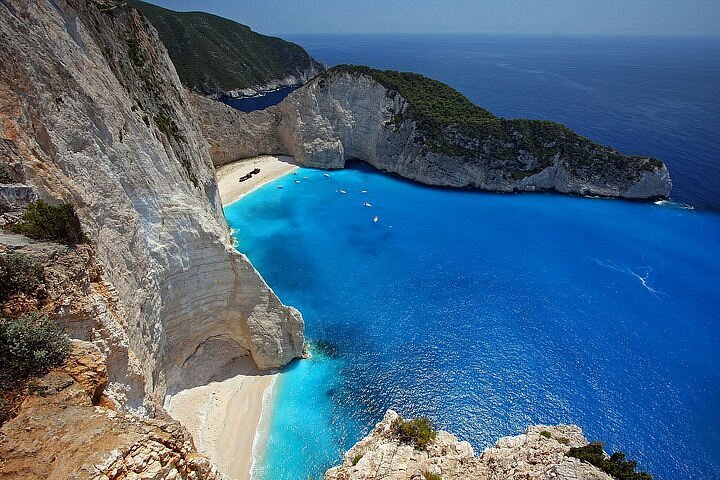
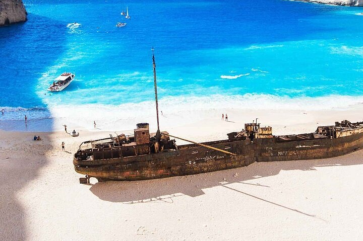
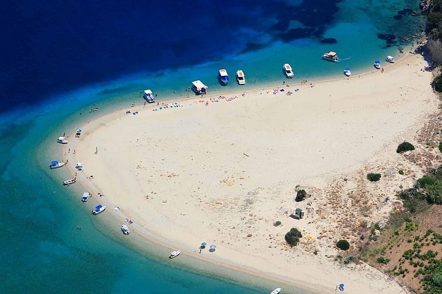
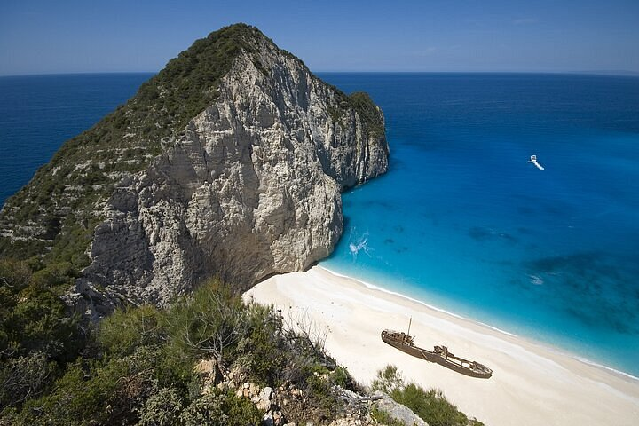
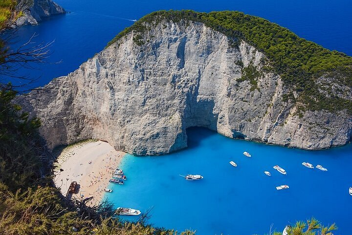

The Ultimate Private Tour on Zakynthos Island ️
The price includes all land and sea tour costs. Please text me in advance if you are a group or a family of more than 4 people. LAND TOUR by Private vehicle. Shipwreck view point, Xigia beach, Makris Gialos beach, Porto Limnionas, Porto Roxa, Zante town, etc SEA TOUR by small shared boat. Shipwreck beach and Blue caves. My Private Tour is perfect for a couple, family, a group of friends or a small company outing! If you’re ready to get travelling again, but would prefer to travel without the group, my new private tour might be just what you’re looking for. Its the prefect way to explore Zakynthos Island. Set your own pace and avoid tiring big groups and stressful crowds.

Private Half-Day Tour of Navagio Beac
Take a private tour and enjoy your journey in comfort on a Mercedes Viano modern minibus with a professional English-speaking driver. Board a boat to visit the Navagio Shipwreck Beach and the Caves.
from
$623.60

Zante Daily Cruise with bus Transer to the port
Zante Daily Cruise with bus Transer to the port

Zakynthos Keri Caves, Marathonissi, and Turtle-Spotting Kaiki Boat Trip
Ride a traditional ‘kaiki’ boat to the Keri Caves and Marathonissi Island while watching for turtles on this Zakynthos cruise trip. Settle into a wooden ‘kaiki’ and sail to the Keri Caves to admire and snap photos of the blue-watered grottoes. Then, enjoy a swim stop off Marathonissi before cruising Laganas Bay to look for rare caretta-caretta turtles. This family-friendly boat trip includes pickup and drop-off at selected Zakynthos resorts.
from
$34.30
per adult

Half Day Shipwreck Bay Guided Tour by Fast Boat
Shipwreck Bay is famous Shipwreck Beach, known all over the world and ranked among the 10 most beautiful beaches in the world.
Because of its fame, this place, especially in high season, is invaded so we wanted you to enjoy this place in the best possible conditions.
We are offering a Small Speedboat of 24 seats maximun, so you can avoid the overcrowding of a typical boat and you can admire more places during our boat trip.
from
$93.54

11 Day Private Tour in Classical Greece with Zakynthos, Mykonos, Santorini
11 days tour package in Mainland Greece & Greek Islands, visit the world's heritage site by UNESCO, Argolis, Delphi, Meteora, Olympia, combining a tour at beautiful Islands of Zakynthos, Mykonos and Santorini Island.
Travel in Zakynthos, with the mesmerizing crystal-clear water and relax in the sandy beaches, visit the stunning Blue Caves and the Navagio Shipwreck, take unique photos of turtles at a close distance as you sail through the coast of Zakynthos if you are lucky!
Visit Santorini, with the famous volcano and enjoy your walk to the caldera and live the unique experience of the magical sunset!
Visit Mykonos, the most famous island in the world, with the fascinating night-life and the fabulous sandy beaches and the beach bars, while having the opportunity to meet celebrities from all over the world! Combine your tour with the cruise at the impressive Delos, the sacred Island of Apollo and Artemis!
from
$2,701.23